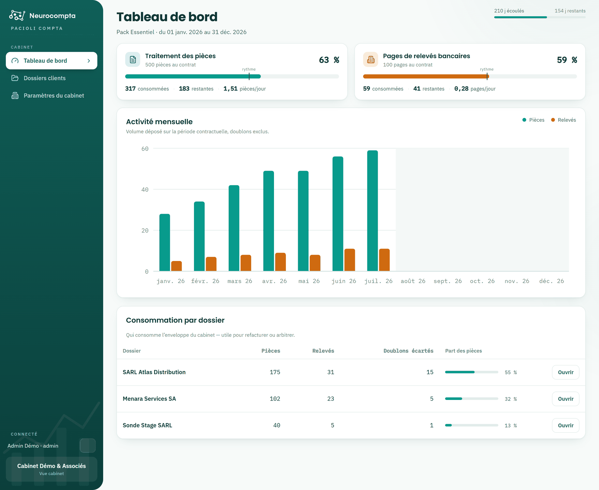

Suivre votre consommation
Enveloppes du contrat, rythme de dépôt et répartition par dossier.
Le tableau de bord est le premier écran de l'administrateur. Il répond à une question : votre contrat tiendra-t-il jusqu'à l'échéance au rythme actuel ?
Deux enveloppes sont suivies séparément : le traitement des pièces et les pages de relevés bancaires. Les doublons écartés ne sont jamais décomptés.

Lire une enveloppe
Chaque carte affiche le consommé, le restant et le rythme quotidien. Le trait vertical sur la jauge marque le repère de rythme : c'est là que votre consommation devrait se situer aujourd'hui, compte tenu du chemin déjà parcouru dans le contrat.
- La jauge en deçà du repère : vous consommez moins vite que la durée ne s'écoule.
- La jauge au-delà du repère : vous consommez plus vite, sans que l'enveloppe soit nécessairement menacée.
- La barre en haut de page rappelle les jours écoulés et restants de la période contractuelle.
Alertes de seuil
- À 80 % de consommation, un message ambre invite à anticiper le renouvellement.
- À 90 %, le message passe au rouge : le dépôt se bloquera pour tous les dossiers une fois l'enveloppe vide.
- Les deux messages portent l'adresse du service commercial.
Activité et répartition
- Le graphique d'activité mensuelle montre le volume déposé mois par mois sur la période contractuelle ; survolez une colonne pour le détail.
- Le tableau « Consommation par dossier » indique qui consomme l'enveloppe du cabinet — utile pour refacturer ou arbitrer.
Cet écran est réservé aux administrateurs : il porte sur le contrat du cabinet, pas sur un dossier. Un profil Utilisateur arrive directement sur ses dossiers clients.